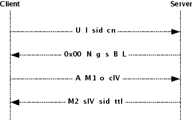

|
For the latest news and information visit The GNU Crypto project |
||||||||||
| PREV PACKAGE NEXT PACKAGE | FRAMES NO FRAMES | ||||||||||
See:
Description
| Interface Summary | |
| SRPRegistry | A list of key names designating the values exchanged between the server and client in an SRP communication authentication phase. |
| Class Summary | |
| CALG | A Factory class that returns CALG (Confidentiality Algorithm) instances that operate as described in the draft-burdis-cat-sasl-srp-08. |
| ClientStore | The client-side implementation of the SRP security context store. |
| IALG | A Factory class that returns IALG (Integrity Algorithm) instances that operate as described in the draft-burdis-cat-sasl-srp-04 and later. |
| KDF | The SASL-SRP KDF implementation, which is also used, depending on how it was instantiated, as a secure Pseudo Random Number Generator. |
| PasswordFile | The implementation of SRP-6 password files. |
| SecurityContext | A package-private placeholder for an SRP security context. |
| ServerStore | The server-side implementation of the SRP security context store. |
| SRP | A Factory class that returns SRP Singletons that know all SRP-related mathematical computations and protocol-related operations for both the client- and server-sides. |
| SRPAuthInfoProvider | The SRP mechanism authentication information provider implementation. |
| SRPClient | The SASL-SRP client-side mechanism. |
| SRPServer | The SASL-SRP server-side mechanism. |
| StoreEntry | A simple timing-related object for use by SRP re-use code. |
Provides the implementations of the SASL SRP mechanism, as specified in draft-burdis-cat-srp-sasl.
The Secure Remote Password ( SRP) is a password-based, zero-knowledge, authentication and key-exchange protocol developed by Thomas Wu. It has good performance, is not plaintext-equivalent and maintains perfect forward secrecy. It provides authentication (optionally mutual authentication) and the negotiation of a session key.
The mechanism described in the IETF Draft, and implemented in this library, is based on the SRP-6 protocol, described in "SRP Protocol Design" and "SRP: The Open Source Password Authentication Standard". SRP-6 is an improved version of the original SRP protocol (also called SRP-3) described in RFC-2945.In this mechanism, the following exchange occurs when a new session is negotiated between the client and the server. It will also occur when the client requests re-use of the parameters of a previous session and either the server does not support such re-use or no longer considers the previous session to be valid:

Where:
On the other hand, the following exchange occurs when the client requests that the parameters negotiated in a previous session be re-used in this session, but with a newly derived shared context key, and the server agrees:
Where:
|
For the latest news and information visit The GNU Crypto project |
||||||||||
| PREV PACKAGE NEXT PACKAGE | FRAMES NO FRAMES | ||||||||||